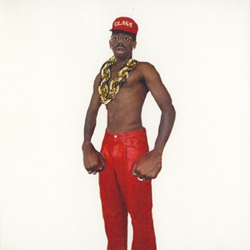

Tem como colocar em negrito usando a tag B que é não semântico
Tem como colocar usando tag Strong, que dá mais sentido ao código
Nesta frase usei a tag i que não é semântico
Para ser semântico uso a tag EM
Usa só a tag MARK para marcador de texto
ANTENÇÃO: para mudar a cor do marcador usa apenas CSS, tanto se for na linha quanto se alterar no cabeçalho
Aqui estou usando a tag <Big> para deixar o código grande, porém já se tornou obsoleta
Neste estou usando a tag Small para deixar o texto pequeno
Pode lido mas não considerado, vai ficar uma frase com risco no meio, uso a tag <del>
para indicar que ele foi colocado depois, uso a tag <ins>, fica sublinhado
podemos fazer a mesma coisa mas usando a tag <u>, mas se tornou obsoleta
Um exemplo de onde vamos usar isso é quando queremos descrever uma questão matemática, como x2, o dois fica em cima da letra "x"
Apenas um exemplo de imagem de um álbum de música que eu gostei
Esse outro exemplo é usando apenas o endereço da imagem